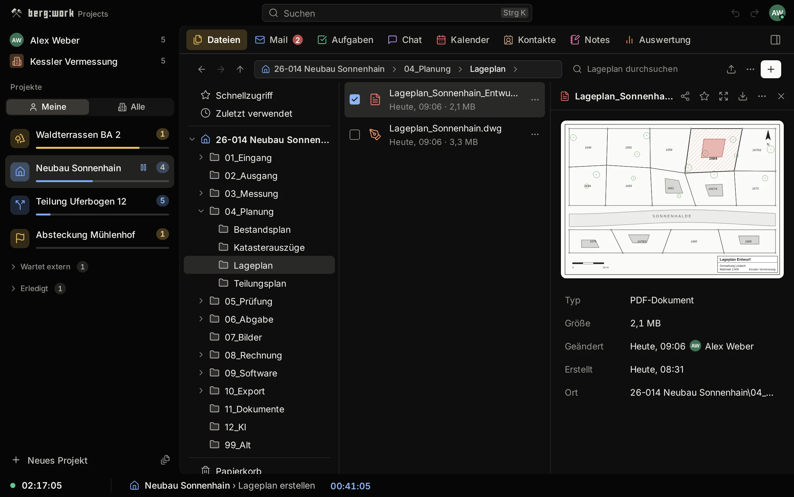
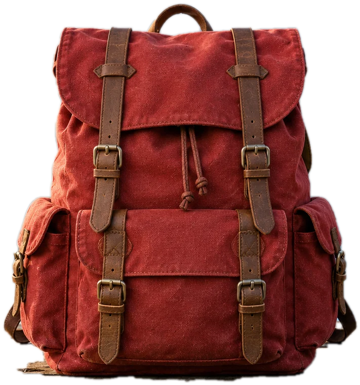

ProjectsTest version 0.1.2
Try it
right here.
This is the app itself, running in your browser with sample data. Pick a project on the left, and every tab shows only what belongs to it.

Click to use the app
Nothing
moves out.
Projects is a view. It reads from Microsoft 365 and writes back there, so everyone who isn’t using berg:work keeps working as before.
PDFIn your browser
Move
anything.
Every line of text, every picture and every drawing is an object you can grab. Retype a word in the document’s own font, then save a normal PDF.
Drag the house. Turn it. Double-click a text.
ImageIn your browser
Layers that
stay loose.
Take a product out of its background on your own computer, drop it into a new scene and put text over it. Nothing is final until you export.

Into the hills
Layers hover a row
27blend modesEvery mode on the plan is built.
16bits per channelTagged PNG, JPEG and TIFF come in with their colour profile.
5export formatsPNG, JPEG, WebP, AVIF and TIFF, at 1×, 2× and 3×.
0uploadsBackground removal runs on your computer. The project format is open and documented.
PrivacyAll three tools
Your files stay yours.
Network log, PDF editor24 Oct 2026
POST 0PUT 0Other hosts 0
25requests
1host: bergwork.app
0uploads
Open the sample PDF, edit it, save it. Every request is a GET to bergwork.app for the editor itself. The file never leaves your disk.
One person,
in the Allgäu.
berg:work is built by Florian Fischer in Grünenbach, Germany. Found a bug or missing something? Your message goes straight to the person who writes the code.
Send feedback